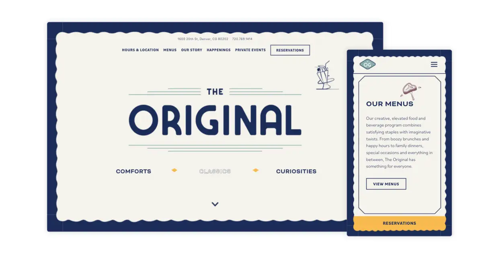
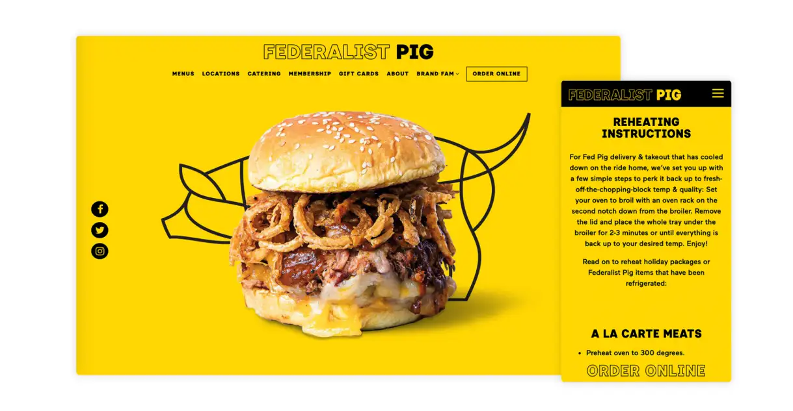
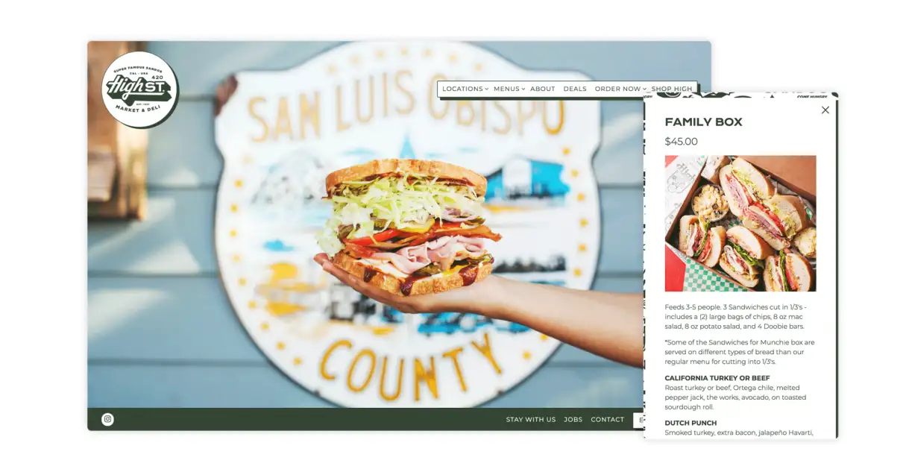
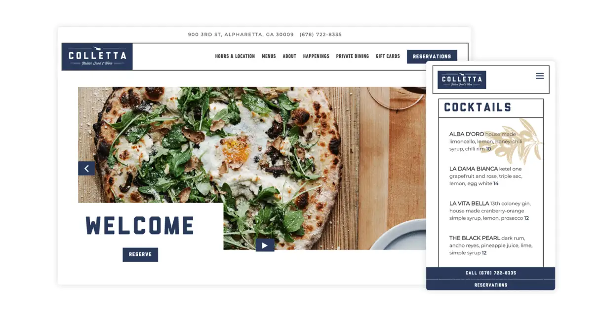
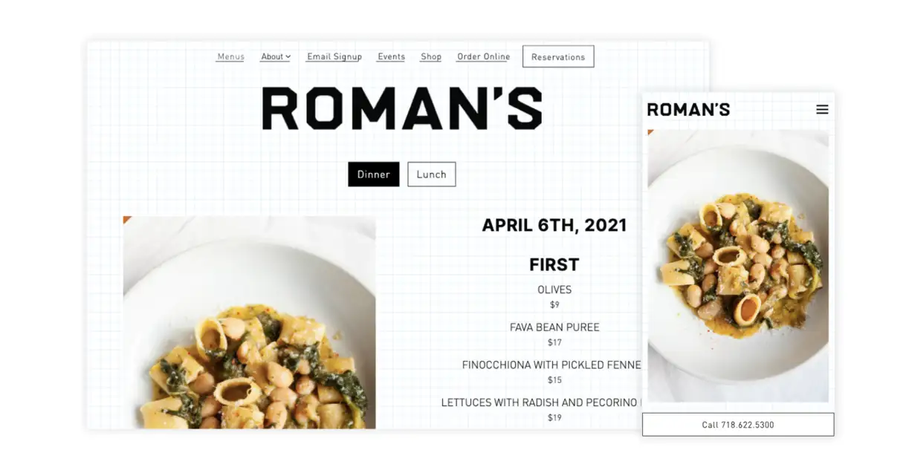
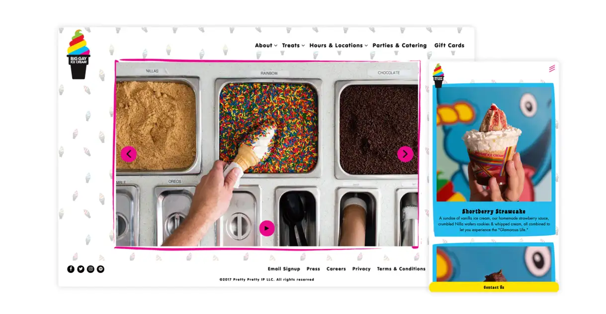
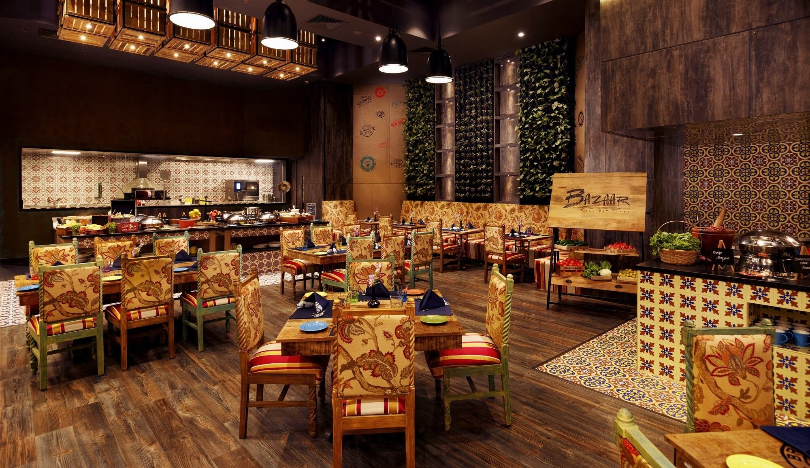
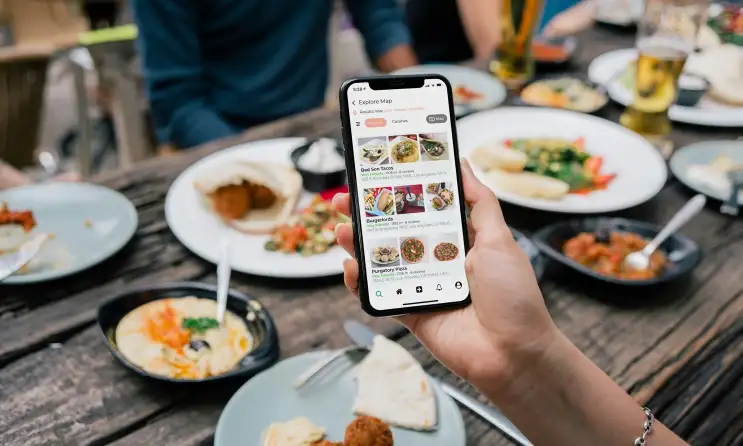

The industry has spoken, and the official list is here.
Read The BentoBox25 Now!
Bentobox
Why Bento
Products
Restaurant Type
Pricing
Resources
+1 (877) 353-2447
Explore Topics
Hospitality Now
Stories for the Restaurant Community
Design Inspiration
The 20 Best Restaurant Websites of 2024
Our annual roundup of the internet's best restaurant websites.
BentoBox Staff
Writers, thinkers, and technology experts with deep roots in hospitality.
Each year we put together a list of our favorite restaurant websites based on a set of criteria: overall design, attention to detail and the unique features that restaurants use to create a powerful first impression to visitors and drive critical revenue. Presenting the best restaurant websites of 2024.
THE ORIGINAL
Denver, CO | theogdenver.com

The Original is a revered Denver-based diner from Sage Restaurant Concepts. Built on the idea of reinventing the place where locals go, this neighborhood eatery satisfies diners with imaginative twists. Their website is a great example of bringing the restaurant experience online, with quirky illustrations of malts and T-bone steaks throughout which brings the website to life. The navy border keeps guests focused while browsing menus and new happenings from inside the restaurant. The highlighted “Reservations” button is optimized to prompt visitors to book a table, thus turning an online guest into a paying customer.Federalist Pig
Federalist Pig
Washington, DC | federalistpig.com

Federalist Pig is one of Washington, DC’s most iconic barbecue joints — so much so that it was featured in an episode of Netflix's House of Cards. Its website is a feast for the senses, including bright colors, cheeky line illustrations and mouthwatering food photography. Despite how loud and eye-catching the design system is, the site itself is clean, well-structured and easy to navigate. It shows that restaurant websites do not need to choose between making a splash and being user-friendly.
PRODUCT
Websites for Restaurants
Get a beautifully designed website with tools to grow your business.
High Street Market & Deli
San Luis Obispo, CA | highstdeli.com

Built in 1927, High Street Market and Deli has been serving the community of San Luis Obispo — in between Los Angeles and San Francisco — for nearly one hundred years. Their website is modern, clean and impactful, with fun and illustrative branding spread throughout — notably on their menus. Visitors can order catering directly on their website. But best of all, for their most devoted fans, visitors can shop their online store for all kinds of branded merch and goods.
Colletta
Alpharetta, GA | collettarestaurant.com

Drawing influence from Northern Italy, Colletta is a collection of unique dining experiences, just outside of Atlanta, Georgia, with a twist on treasured classics. Part of The Indigo Road Hospitality Group, Colletta’s website draws in a visitor’s attention through clean and modern design. On mobile, their website features quick call-to-action buttons to make a reservation or to call the restaurant. Visitors can easily inquire about private dining or learn about events, happy hours and more.
Roman's
New York, NY | romansnyc.com

Although Romans has partnered with BentoBox since 2018, the beloved Brooklyn-based restaurant recently went through a website refresh (BentoBox customers receive a complimentary redesign every 3 years). Roman’s aligns itself with local farmers and producers to serve "reverent Italian-influenced food." Unpretentious and subtle, the new website features a unique, graph paper background. For brevity, the homepage immediately features the lunch and dinner menus which are updated daily. Visitors can quickly call the restaurant with one click or simply make a reservation through the integration with Resy.
Big Gay Ice Cream
NYC & Philadelphia | biggayicecream.com

With four locations in the New York area, Big Gay Ice Cream is a haven for ice cream lovers. As tasteful as its dipped cones, the website is a fun, vibrant browsing experience. With the store locator feature, visitors can quickly find the brand's nearest location and can access important information (such as FAQs about their ice cream), read about their philanthropic efforts, inquire about hosting events and purchase gift cards.
BentoBox Marketing & Commerce Platform
Deliver Smarter Hospitality
Want to stand out online, bring in more money, engage your diners, and streamline operations?
Anton's
New York, NY | antonsnyc.com

With four locations in the New York area, Big Gay Ice Cream is a haven for ice cream lovers. As tasteful as its dipped cones, the website is a fun, vibrant browsing experience. With the store locator feature, visitors can quickly find the brand's nearest location and can access important information (such as FAQs about their ice cream), read about their philanthropic efforts, inquire about hosting events and purchase gift cards.
Disco Cheetah
Vancouver, BC (Canada) | discocheetah.com
With four locations in the New York area, Big Gay Ice Cream is a haven for ice cream lovers. As tasteful as its dipped cones, the website is a fun, vibrant browsing experience. With the store locator feature, visitors can quickly find the brand's nearest location and can access important information (such as FAQs about their ice cream), read about their philanthropic efforts, inquire about hosting events and purchase gift cards.
Damian
Los Angeles, CA | damiandtla.com
With four locations in the New York area, Big Gay Ice Cream is a haven for ice cream lovers. As tasteful as its dipped cones, the website is a fun, vibrant browsing experience. With the store locator feature, visitors can quickly find the brand's nearest location and can access important information (such as FAQs about their ice cream), read about their philanthropic efforts, inquire about hosting events and purchase gift cards.
China Poblano
Las Vegas, NV | chinapoblano.com
With four locations in the New York area, Big Gay Ice Cream is a haven for ice cream lovers. As tasteful as its dipped cones, the website is a fun, vibrant browsing experience. With the store locator feature, visitors can quickly find the brand's nearest location and can access important information (such as FAQs about their ice cream), read about their philanthropic efforts, inquire about hosting events and purchase gift cards.
Diner
Brooklyn, NY | dinernyc.com
With four locations in the New York area, Big Gay Ice Cream is a haven for ice cream lovers. As tasteful as its dipped cones, the website is a fun, vibrant browsing experience. With the store locator feature, visitors can quickly find the brand's nearest location and can access important information (such as FAQs about their ice cream), read about their philanthropic efforts, inquire about hosting events and purchase gift cards.
PRODUCT
Online Ordering for Restaurants
Drive more revenue with unified, branded, commission-free online ordering.
The Tailor's Son
San Francisco, CA | thetailorssonsf.com
With four locations in the New York area, Big Gay Ice Cream is a haven for ice cream lovers. As tasteful as its dipped cones, the website is a fun, vibrant browsing experience. With the store locator feature, visitors can quickly find the brand's nearest location and can access important information (such as FAQs about their ice cream), read about their philanthropic efforts, inquire about hosting events and purchase gift cards.
Francie
Brooklyn, NY | franciebrooklyn.com
Operated by renowned chef-owner Chris Cipollone (Piora, Cotogna) and owner-operator John Winterman (Batard, Daniel), Francie is a beloved Brooklyn restaurant that delivers an approachable yet elevated dining experience. A unique characteristic of their website is their “Happenings” page, where visitors can purchase tickets online to the “Learn How To Make Pasta Like A Pro” event or to get behind the scenes and work in a real kitchen through their “Guest Chef For A Day” experience.
Miss Lilys
NYC, Jamaica & Dubai | misslilys.com
Vibrant, colorful branding brings this Caribbean-influenced staple to life online. The eclectic, cool and friendly atmosphere makes Miss Lily’s a destination for booking rum and jerk chicken fueled events. With simple-to-fill-out inquiry forms, your next island party is a record flip away.
Tiki Chick
New York, NY | tikichick.com
Tiki is back and here to stay. Tiki Chick is the latest concept from Pickle Hospitality. The group has worked meticulously to bring unique, approachable and refreshing tiki drinks to New Yorkers. Their website directly reflects their ethos with bright colors and fun branding, transporting visitors to a tropical paradise of another time, yet evokes our modern time. Just take a look at their elaborate menus, including fun, illustrated renditions of their tiki drinks.
BentoBox Marketing & Commerce Platform
Deliver Smarter Hospitality
Want to stand out online, bring in more money, engage your diners, and streamline operations?
Recommended

Websites
10 Most Popular Restaurant Website Builders in 2024
February 21, 2023
An overview of the current restaurant website landscape.
Websites
10 Most Popular Restaurant Website Builders in 2024
February 21, 2023
An overview of the current restaurant website landscape.
Websites
10 Most Popular Restaurant Website Builders in 2024
February 21, 2023
An overview of the current restaurant website landscape.